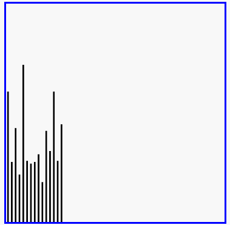

排序与搜索¶
排序算法（英语：Sorting algorithm）是一种能将一串数据依照特定顺序进行排列的一种算法。
排序算法的稳定性¶
稳定性：稳定排序算法会让原本有相等键值的纪录维持相对次序。也就是如果一个排序算法是稳定的，当有两个相等键值的纪录R和S，且在原本的列表中R出现在S之前，在排序过的列表中R也将会是在S之前。
当相等的元素是无法分辨的，比如像是整数，稳定性并不是一个问题。然而，假设以下的数对将要以他们的第一个数字来排序。
(4, 1) (3, 1) (3, 7)（5, 6） 在这个状况下，有可能产生两种不同的结果，一个是让相等键值的纪录维持相对的次序，而另外一个则没有：
(3, 1) (3, 7) (4, 1) (5, 6) （维持次序） (3, 7) (3, 1) (4, 1) (5, 6) （次序被改变） 不稳定排序算法可能会在相等的键值中改变纪录的相对次序，但是稳定排序算法从来不会如此。不稳定排序算法可以被特别地实现为稳定。作这件事情的一个方式是人工扩充键值的比较，如此在其他方面相同键值的两个对象间之比较，（比如上面的比较中加入第二个标准：第二个键值的大小）就会被决定使用在原先数据次序中的条目，当作一个同分决赛。然而，要记住这种次序通常牵涉到额外的空间负担。
6.1 冒泡排序¶
冒泡排序（英语：Bubble Sort）是一种简单的排序算法。它重复地遍历要排序的数列，一次比较两个元素，如果他们的顺序错误就把他们交换过来。遍历数列的工作是重复地进行直到没有再需要交换，也就是说该数列已经排序完成。这个算法的名字由来是因为越小的元素会经由交换慢慢“浮”到数列的顶端。
冒泡排序算法的运作如下：¶
- 比较相邻的元素。如果第一个比第二个大（升序），就交换他们两个。
- 对每一对相邻元素作同样的工作，从开始第一对到结尾的最后一对。这步做完后，最后的元素会是最大的数。
- 针对所有的元素重复以上的步骤，除了最后一个。
- 持续每次对越来越少的元素重复上面的步骤，直到没有任何一对数字需要比较。
冒泡排序的分析¶
交换过程图示(第一次)：
那么我们需要进行n-1次冒泡过程，每次对应的比较次数如下图所示：
1 2 3 4 5 6 7 8 9 10 11 12 13 14 15 16 17 18 19 20 21 22 23 | # -*- coding: utf-8 -*- """ Spyder Editor This is a temporary script file. """ #使用顺序表进行实现要简单许多 #列表的长度len(list)是n,最后一个元素的索引是n-1,起始索引是0 def bubble_sort(alist): #输出的变量是需要排序的列表 # j表示每次遍历需要比较的次数，是逐渐减小的,一直减小到1,range(0,n)只会产生0-(n-1),反过来同理 for j in range(len(alist)-1,0,-1): #执行n-1次 #使用i做游标进行两两比较交换数据 for i in range(j): #第一次的时候游标到索引为n-2的位置上,跟n-1的位置进行比较交换就可以了 if alist[i] > alist[i+1]: alist[i], alist[i+1] = alist[i+1], alist[i] #python特有的交换写法 print(alist) li = [1,2,3,0,4,5,6,7,8] print("需要排序的列表: ",li) bubble_sort(li) print("排序完成的列表: ",li) |
执行的结果:
1 2 3 4 5 6 7 8 9 10 11 12 13 14 15 16 17 18 19 20 21 22 23 24 25 26 27 28 29 30 31 32 33 34 35 36 37 38 | 需要排序的列表: [1, 2, 3, 0, 4, 5, 6, 7, 8] [1, 2, 3, 0, 4, 5, 6, 7, 8] [1, 2, 3, 0, 4, 5, 6, 7, 8] [1, 2, 0, 3, 4, 5, 6, 7, 8] [1, 2, 0, 3, 4, 5, 6, 7, 8] [1, 2, 0, 3, 4, 5, 6, 7, 8] [1, 2, 0, 3, 4, 5, 6, 7, 8] [1, 2, 0, 3, 4, 5, 6, 7, 8] [1, 2, 0, 3, 4, 5, 6, 7, 8] [1, 2, 0, 3, 4, 5, 6, 7, 8] [1, 0, 2, 3, 4, 5, 6, 7, 8] [1, 0, 2, 3, 4, 5, 6, 7, 8] [1, 0, 2, 3, 4, 5, 6, 7, 8] [1, 0, 2, 3, 4, 5, 6, 7, 8] [1, 0, 2, 3, 4, 5, 6, 7, 8] [1, 0, 2, 3, 4, 5, 6, 7, 8] [0, 1, 2, 3, 4, 5, 6, 7, 8] [0, 1, 2, 3, 4, 5, 6, 7, 8] [0, 1, 2, 3, 4, 5, 6, 7, 8] [0, 1, 2, 3, 4, 5, 6, 7, 8] [0, 1, 2, 3, 4, 5, 6, 7, 8] [0, 1, 2, 3, 4, 5, 6, 7, 8] [0, 1, 2, 3, 4, 5, 6, 7, 8] [0, 1, 2, 3, 4, 5, 6, 7, 8] [0, 1, 2, 3, 4, 5, 6, 7, 8] [0, 1, 2, 3, 4, 5, 6, 7, 8] [0, 1, 2, 3, 4, 5, 6, 7, 8] [0, 1, 2, 3, 4, 5, 6, 7, 8] [0, 1, 2, 3, 4, 5, 6, 7, 8] [0, 1, 2, 3, 4, 5, 6, 7, 8] [0, 1, 2, 3, 4, 5, 6, 7, 8] [0, 1, 2, 3, 4, 5, 6, 7, 8] [0, 1, 2, 3, 4, 5, 6, 7, 8] [0, 1, 2, 3, 4, 5, 6, 7, 8] [0, 1, 2, 3, 4, 5, 6, 7, 8] [0, 1, 2, 3, 4, 5, 6, 7, 8] [0, 1, 2, 3, 4, 5, 6, 7, 8] 排序完成的列表: [0, 1, 2, 3, 4, 5, 6, 7, 8] |
时间复杂度¶
- 最优时间复杂度：O(n) （表示遍历一次发现没有任何可以交换的元素，排序结束。）
- 最坏时间复杂度：O(n2)
- 稳定性：稳定
冒泡排序的演示¶
效果：
 改进的冒泡排序的程序,排序完成就停止,不再继续遍历:
改进的冒泡排序的程序,排序完成就停止,不再继续遍历:
1 2 3 4 5 6 7 8 9 10 11 12 13 14 15 16 17 18 19 20 21 22 23 24 25 26 27 28 | # -*- coding: utf-8 -*- """ Spyder Editor This is a temporary script file. """ #使用顺序表进行实现要简单许多 #列表的长度len(list)是n,最后一个元素的索引是n-1,起始索引是0 def bubble_sort(alist): #输出的变量是需要排序的列表 # j表示每次遍历需要比较的次数，是逐渐减小的,一直减小到1,range(0,n)只会产生0-(n-1),反过来同理 for j in range(len(alist)-1,0,-1): #执行n-1次 #使用i做游标进行两两比较交换数据 count=0 #用来记录每一次内层循环的两两交换执行了多少次,如果执行完内层的循环计数为0,说明已经排序完成,就不用再继续排序了,降低了时间复杂度 for i in range(j): #第一次的时候游标到索引为n-2的位置上,跟n-1的位置进行比较交换就可以了 if alist[i] > alist[i+1]: alist[i], alist[i+1] = alist[i+1], alist[i] #python特有的交换写法 count+=1 print(alist) if count==0: return #计数没有改变说明排序完成,终止循环 li = [1,2,3,0,4,5,6,7,8] print("需要排序的列表: ",li) bubble_sort(li) print("排序完成的列表: ",li) |
执行结果:
1 2 3 4 5 6 7 8 9 10 11 12 13 14 15 16 17 18 19 20 21 22 23 24 25 26 27 28 | 需要排序的列表: [1, 2, 3, 0, 4, 5, 6, 7, 8] [1, 2, 3, 0, 4, 5, 6, 7, 8] [1, 2, 3, 0, 4, 5, 6, 7, 8] [1, 2, 0, 3, 4, 5, 6, 7, 8] [1, 2, 0, 3, 4, 5, 6, 7, 8] [1, 2, 0, 3, 4, 5, 6, 7, 8] [1, 2, 0, 3, 4, 5, 6, 7, 8] [1, 2, 0, 3, 4, 5, 6, 7, 8] [1, 2, 0, 3, 4, 5, 6, 7, 8] [1, 2, 0, 3, 4, 5, 6, 7, 8] [1, 0, 2, 3, 4, 5, 6, 7, 8] [1, 0, 2, 3, 4, 5, 6, 7, 8] [1, 0, 2, 3, 4, 5, 6, 7, 8] [1, 0, 2, 3, 4, 5, 6, 7, 8] [1, 0, 2, 3, 4, 5, 6, 7, 8] [1, 0, 2, 3, 4, 5, 6, 7, 8] [0, 1, 2, 3, 4, 5, 6, 7, 8] [0, 1, 2, 3, 4, 5, 6, 7, 8] [0, 1, 2, 3, 4, 5, 6, 7, 8] [0, 1, 2, 3, 4, 5, 6, 7, 8] [0, 1, 2, 3, 4, 5, 6, 7, 8] [0, 1, 2, 3, 4, 5, 6, 7, 8] [0, 1, 2, 3, 4, 5, 6, 7, 8] [0, 1, 2, 3, 4, 5, 6, 7, 8] [0, 1, 2, 3, 4, 5, 6, 7, 8] [0, 1, 2, 3, 4, 5, 6, 7, 8] [0, 1, 2, 3, 4, 5, 6, 7, 8] 排序完成的列表: [0, 1, 2, 3, 4, 5, 6, 7, 8] |
可以看到这样排序的次数减少了
选择排序¶
选择排序（Selection sort）是一种简单直观的排序算法。它的工作原理如下。首先在未排序序列中找到最小（大）元素，存放到排序序列的起始位置，然后，再从剩余未排序元素中继续寻找最小（大）元素，然后放到已排序序列的末尾。以此类推，直到所有元素均排序完毕。
选择排序的主要优点与数据移动有关。如果某个元素位于正确的最终位置上，则它不会被移动。选择排序每次交换一对元素，它们当中至少有一个将被移到其最终位置上，因此对n个元素的表进行排序总共进行至多n-1次交换。在所有的完全依靠交换去移动元素的排序方法中，选择排序属于非常好的一种。
选择排序分析¶
排序过程：

红色表示当前最小值，黄色表示已排序序列，蓝色表示当前位置。
1 2 3 4 5 6 7 8 9 10 11 12 13 14 15 16 17 18 19 20 21 22 23 24 25 | # -*- coding: utf-8 -*- """ Spyder Editor This is a temporary script file. """ #选择最小值进行排序 def selection_sort(alist): n = len(alist) # 需要进行n-1次选择操作 for i in range(n-1): #j:0-(n-2),剩下的最后一个位置肯定是最大值了 # 记录最小位置 min_index = i #加入是0 # 从i+1位置到末尾选择出最小数据 #从1-剩余的元素选出最小的数据,每次都跟0这个位置的元素比较,最小值的索引的保存给mix_index for j in range(i+1, n): if alist[j] < alist[min_index]: min_index = j # 如果选择出的数据不在正确位置，进行交换 if min_index != i: alist[i], alist[min_index] = alist[min_index], alist[i] alist = [54,226,93,17,77,31,44,55,20] print("需要排序的列表: ",alist) selection_sort(alist) print("选择排序完成: ",alist) |
执行结果:
1 2 | 需要排序的列表: [54, 226, 93, 17, 77, 31, 44, 55, 20] 选择排序完成: [17, 20, 31, 44, 54, 55, 77, 93, 226] |
时间复杂度¶
- 最优时间复杂度：O(n2)
- 最坏时间复杂度：O(n2)
- 稳定性：不稳定（考虑升序每次选择最大的情况）
选择排序演示¶

插入排序¶
插入排序（英语：Insertion Sort）是一种简单直观的排序算法。它的工作原理是通过构建有序序列，对于未排序数据，在已排序序列中从后向前扫描，找到相应位置并插入。插入排序在实现上，在从后向前扫描过程中，需要反复把已排序元素逐步向后挪位，为最新元素提供插入空间。
插入排序分析¶

1 2 3 4 5 6 7 8 9 10 11 12 13 14 15 16 17 18 19 20 | # -*- coding: utf-8 -*- """ Spyder Editor This is a temporary script file. """ def insert_sort(alist): # 从第二个位置，即下标为1的元素开始向前插入,默认索引为0的第一个元素是排好序的 for i in range(1, len(alist)): #取到索引为n-1的元素 # 从第i个元素开始向前比较，如果小于前一个元素，交换位置 for j in range(i, 0, -1): if alist[j] < alist[j-1]: alist[j], alist[j-1] = alist[j-1], alist[j] else: #前面的都是有序的,因此如果这个元素比前一个大说明就不用继续往下排了 break alist = [54,26,93,17,77,31,44,55,20] print("未排序的列表: ",alist) insert_sort(alist) print("插入排序好的列表: ",alist) |
执行结果:
1 2 | 未排序的列表: [54, 26, 93, 17, 77, 31, 44, 55, 20] 插入排序好的列表: [17, 20, 26, 31, 44, 54, 55, 77, 93] |
时间复杂度¶
- 最优时间复杂度：O(n) （升序排列，序列已经处于升序状态）
- 最坏时间复杂度：O(n2)
- 稳定性：稳定
插入排序演示¶

希尔排序¶
希尔排序(Shell Sort)是插入排序的一种。也称缩小增量排序，是直接插入排序算法的一种更高效的改进版本。希尔排序是非稳定排序算法。该方法因DL．Shell于1959年提出而得名。 希尔排序是把记录按下标的一定增量分组，对每组使用直接插入排序算法排序；随着增量逐渐减少，每组包含的关键词越来越多，当增量减至1时，整个文件恰被分成一组，算法便终止。
希尔排序过程¶
希尔排序的基本思想是：将数组列在一个表中并对列分别进行插入排序，重复这过程，不过每次用更长的列（步长更长了，列数更少了）来进行。最后整个表就只有一列了。将数组转换至表是为了更好地理解这算法，算法本身还是使用数组进行排序。
例如，假设有这样一组数[ 13 14 94 33 82 25 59 94 65 23 45 27 73 25 39 10 ]，如果我们以步长为5开始进行排序，我们可以通过将这列表放在有5列的表中来更好地描述算法，这样他们就应该看起来是这样(竖着的元素是步长组成)：
1 2 3 4 | 13 14 94 33 82 25 59 94 65 23 45 27 73 25 39 10 |
然后我们对每列进行排序：
1 2 3 4 | 10 14 73 25 23 13 27 94 33 39 25 59 94 65 82 45 |
将上述四行数字，依序接在一起时我们得到：[ 10 14 73 25 23 13 27 94 33 39 25 59 94 65 82 45 ]。这时10已经移至正确位置了，然后再以3为步长进行排序：
1 2 3 4 5 6 | 10 14 73 25 23 13 27 94 33 39 25 59 94 65 82 45 |
排序之后变为：
1 2 3 4 5 6 | 10 14 13 25 23 33 27 25 59 39 65 73 45 94 82 94 |
最后以1步长进行排序（此时就是简单的插入排序了）
希尔排序的分析¶
1 2 3 4 5 6 7 8 9 10 11 12 13 14 15 16 17 18 19 20 21 22 23 24 25 26 27 28 29 30 31 | # -*- coding: utf-8 -*- """ Spyder Editor This is a temporary script file. """ def shell_sort(alist): """希尔排序""" n = len(alist) # 初始步长 gap = n // 2 #取整 while gap > 0: # 按步长进行插入排序 #从gap开始第一个表进行插入排,再加1第二个表进行排.一直循环到上下所有的表第一次排序完成 #利用for循环就可以对竖线后面的元素与前面的元素全部操作一遍插入排序 for i in range(gap, n): j = i # 插入排序 while j>=gap and alist[j-gap] > alist[j]: alist[j-gap], alist[j] = alist[j], alist[j-gap] j -= gap #使用这个while循环就跟插入排序是一样的,第三个元素要跟第二个和第一个比较两次,因此使用while控制 # 得到新的步长(缩短gap的步长) gap = gap // 2 #每次都是除以2(最后1//2=0) alist = [54,26,93,17,77,31,44,55,20] print("未排序的列表: ",alist) shell_sort(alist) print("插入排序好的列表: ",alist) |
执行结果:
1 2 | 未排序的列表: [54, 26, 93, 17, 77, 31, 44, 55, 20] 插入排序好的列表: [17, 20, 26, 31, 44, 54, 55, 77, 93] |
时间复杂度¶
- 最优时间复杂度：根据步长序列的不同而不同
- 最坏时间复杂度：O(n2)
- 稳定想：不稳定
希尔排序演示¶
快速排序¶
快速排序（英语：Quicksort），又称划分交换排序（partition-exchange sort），通过一趟排序将要排序的数据分割成独立的两部分，其中一部分的所有数据都比另外一部分的所有数据都要小，然后再按此方法对这两部分数据分别进行快速排序，整个排序过程可以递归进行，以此达到整个数据变成有序序列。
步骤为：
- 从数列中挑出一个元素，称为"基准"（pivot），
- 重新排序数列，所有元素比基准值小的摆放在基准前面，所有元素比基准值大的摆在基准的后面（相同的数可以到任一边）。在这个分区结束之后，该基准就处于数列的中间位置。这个称为分区（partition）操作。
- 递归地（recursive）把小于基准值元素的子数列和大于基准值元素的子数列排序。
递归的最底部情形，是数列的大小是零或一，也就是永远都已经被排序好了。虽然一直递归下去，但是这个算法总会结束，因为在每次的迭代（iteration）中，它至少会把一个元素摆到它最后的位置去。
快速排序的分析¶
1 2 3 4 5 6 7 8 9 10 11 12 13 14 15 16 17 18 19 20 21 22 23 24 25 26 27 28 29 30 31 32 33 34 35 36 37 38 39 40 41 42 | def quick_sort(alist, start, end): """快速排序""" # 递归的退出条件 if start >= end: return # 设定起始元素为要寻找位置的基准元素 mid = alist[start] # low为序列左边的由左向右移动的游标 low = start # high为序列右边的由右向左移动的游标 high = end while low < high: # 如果low与high未重合，high指向的元素不比基准元素小，则high向左移动 while low < high and alist[high] >= mid: high -= 1 # 将high指向的元素放到low的位置上 alist[low] = alist[high] # 如果low与high未重合，low指向的元素比基准元素小，则low向右移动 while low < high and alist[low] < mid: low += 1 # 将low指向的元素放到high的位置上 alist[high] = alist[low] # 退出循环后，low与high重合，此时所指位置为基准元素的正确位置 # 将基准元素放到该位置 alist[low] = mid # 对基准元素左边的子序列进行快速排序 quick_sort(alist, start, low-1) # 对基准元素右边的子序列进行快速排序 quick_sort(alist, low+1, end) alist = [54,26,93,17,77,31,44,55,20] quick_sort(alist,0,len(alist)-1) print(alist) |
时间复杂度¶
- 最优时间复杂度：O(nlogn) 横向是n,竖向是logn
- 最坏时间复杂度：O(n2)
- 稳定性：不稳定
从一开始快速排序平均需要花费O(n log n)时间的描述并不明显。但是不难观察到的是分区运算，数组的元素都会在每次循环中走访过一次，使用O(n)的时间。在使用结合（concatenation）的版本中，这项运算也是O(n)。
在最好的情况，每次我们运行一次分区，我们会把一个数列分为两个几近相等的片段。这个意思就是每次递归调用处理一半大小的数列。因此，在到达大小为一的数列前，我们只要作log n次嵌套的调用。这个意思就是调用树的深度是O(log n)。但是在同一层次结构的两个程序调用中，不会处理到原来数列的相同部分；因此，程序调用的每一层次结构总共全部仅需要O(n)的时间（每个调用有某些共同的额外耗费，但是因为在每一层次结构仅仅只有O(n)个调用，这些被归纳在O(n)系数中）。结果是这个算法仅需使用O(n log n)时间。
快速排序演示¶

归并排序¶
归并排序是采用分治法的一个非常典型的应用。归并排序的思想就是先递归分解数组，再合并数组。
将数组分解最小之后，然后合并两个有序数组，基本思路是比较两个数组的最前面的数，谁小就先取谁，取了后相应的指针就往后移一位。然后再比较，直至一个数组为空，最后把另一个数组的剩余部分复制过来即可。
归并排序的分析¶

1 2 3 4 5 6 7 8 9 10 11 12 13 14 15 16 17 18 19 20 21 22 23 24 25 26 27 28 29 | def merge_sort(alist): if len(alist) <= 1: #如果传进来的列表长度小于1就结束递归,直接返回alist return alist # 二分分解 num = len(alist)//2 #得到的是中间位置的坐标 left = merge_sort(alist[:num]) #将列表分成两部分,递归拆分 right = merge_sort(alist[num:]) #这里不管中间的过程,一定是会返回左边一个有序的列表,右边返回一个排序好的整体 # 合并 (然后将这两个有序的列表进行合并) return merge(left,right) def merge(left, right): '''合并操作，将两个有序数组left[]和right[]合并成一个大的有序数组''' #left与right的下标指针 l, r = 0, 0 result = [] while l<len(left) and r<len(right): if left[l] < right[r]: result.append(left[l]) l += 1 else: result.append(right[r]) r += 1 result += left[l:] #退出循环说明有一个指针走完了,那么就把另一部分剩余的添加进去 result += right[r:] #这两个天剑只会添加一个,谁后走完谁添加 return result alist = [54,26,93,17,77,31,44,55,20] sorted_alist = merge_sort(alist) print(sorted_alist) |
时间复杂度¶
- 最优时间复杂度：O(nlogn)
- 最坏时间复杂度：O(nlogn)
- 稳定性：稳定
- 额外的空间开销
常见排序算法效率比较¶
搜索¶
搜索是在一个项目集合中找到一个特定项目的算法过程。搜索通常的答案是真的或假的，因为该项目是否存在。 搜索的几种常见方法：顺序查找、二分法查找、二叉树查找、哈希查找
二分法查找¶
二分查找又称折半查找，优点是比较次数少，查找速度快，平均性能好；其缺点是要求待查表为有序表，且插入删除困难。因此，折半查找方法适用于不经常变动而查找频繁的有序列表。首先，假设表中元素是按升序排列，将表中间位置记录的关键字与查找关键字比较，如果两者相等，则查找成功；否则利用中间位置记录将表分成前、后两个子表，如果中间位置记录的关键字大于查找关键字，则进一步查找前一子表，否则进一步查找后一子表。重复以上过程，直到找到满足条件的记录，使查找成功，或直到子表不存在为止，此时查找不成功。
二分法查找实现¶
（非递归实现）¶
1 2 3 4 5 6 7 8 9 10 11 12 13 14 | first = 0 #起始位置指针 last = len(alist)-1 #结束位置的指针 while first <= last: #结束的条件,一是返回了查找到,否则当这两个值不满足这个条件时,就说明查找不到了,就返回False midpoint = (first + last)//2 #中间位置 #这里需要的是圆整 if alist[midpoint] == item: #如果跟中间值相等意味着查找到,就返回True return True elif item < alist[midpoint]: #如果这个值比中间值小,就缩小搜索范围的到左边 last = midpoint-1 #中间的不相等就剔除,那么就把结束位置的指针放到中间元素的前一个位置 else: first = midpoint+1 return False testlist = [0, 1, 2, 8, 13, 17, 19, 32, 42,] print(binary_search(testlist, 3)) print(binary_search(testlist, 13)) |
（递归实现）¶
1 2 3 4 5 6 7 8 9 10 11 12 13 14 15 16 17 | def binary_search(alist, item): #传入的是两个数据,一个是待查找的列表,一个是需要查找的数 if len(alist) == 0: #最终什么也没有查找到,就返回一个False return False else: midpoint = len(alist)//2 #这个是新的传入列表的中间值 if alist[midpoint]==item: #如果这个中间值跟需要查找的数相等就代表查找到了就返回True return True else: if item<alist[midpoint]:#否则的话如果这个待查找的值小于中间值中间,就递归查找左边部分 return binary_search(alist[:midpoint],item) else: return binary_search(alist[midpoint+1:],item) #中间值不等于就直接剔除掉 testlist = [0, 1, 2, 8, 13, 17, 19, 32, 42,] print(binary_search(testlist, 3)) print(binary_search(testlist, 13)) |
时间复杂度¶
- 最优时间复杂度：O(1)
- 最坏时间复杂度：O(logn)